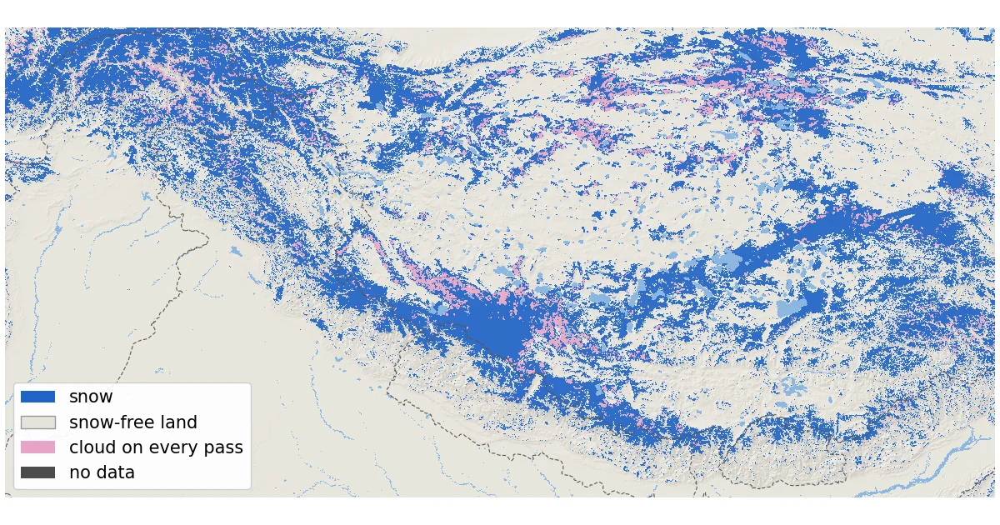

Slovenia snow report today: snow depth and new snow, 17 November 2026
Snow covers roughly 430 km² in Slovenia on 17 November, 700 km² lost since yesterday. In other words, 6 % of the mapped high ground is white.
See the live snow forecast for Vogel in the SnowScope appSnow depth, powder alerts and the 3D map, free.
How much of the country is white
A week ago it was 150 km², so the cover has grown by 280 km². Most of the ground is white from about 2,000 m up.
| Resort | Snow depth | New snow, 72 h | Coming, next days | Top |
|---|---|---|---|---|
| Vogel | 23 cm | 2 cm | 2 cm | 1,731 m |
| Velika planina | 21 cm | 0 cm | 1 cm | 1,664 m |
| Golte | 11 cm | 0 cm | 1 cm | 1,570 m |
| Rogla | 11 cm | 0 cm | 0 cm | 1,511 m |
| Sella Nevea | 9 cm | 4 cm | 9 cm | 2,137 m |
From the valleys to the summits
Average depth of the snowpack by height band: 500-1,000 m: on average under 1 cm (2 % of the ground white); 1,000-1,500 m: on average under 1 cm (9 % of the ground white); 1,500-2,000 m: on average 1 cm (28 % of the ground white); 2,000-2,500 m: on average 4 cm (73 % of the ground white).
Where the fresh snow fell
The last three days were dry or nearly so, with no more than 2 cm anywhere.
What it means on the slopes
The snow is retreating uphill, so plan on the higher lifts and avoid the low valley runs.
Forecast for the week
The week ahead could bring up to 7 cm, 7 cm of it in the next three days.
Thursday 19 November stands out, with up to 6 cm in a day.
The second week adds up to 22 cm where it snows most.
Shortlist for the weekend
At the top of the list, Vogel reports 23 cm.
Then come Velika planina (21 cm), Golte (11 cm), Rogla (11 cm) and Sella Nevea (9 cm).
Vogel picked up 2 cm in the last three days and could add 2 cm by Friday 20 November.
Velika planina had no fresh snow in the last three days; 1 cm could fall by Friday 20 November.
Snow lies on the upper slopes of 13 out of 27 resorts in Slovenia.
Tips for skiers
- Check the resort's own lift status before you travel.
- Read the local avalanche bulletin before going off-piste.
- Fresh snow on a cold base sticks badly: take care on steep slopes.
About these numbers
Resort snow depths are the deepest snow on the resort's upper slopes from the SnowScope snow model (about 1 km, run of 17 November); they are estimates for an area, not a measurement at one point. Station values are measurements on the date shown. Forecasts can change. Always read the official avalanche bulletin before going off-piste.
Cite this report
For research, teaching or the press: the numbers and charts are free to reuse under CC BY 4.0 with this citation.
SnowScope (2026), Slovenia snow report today: snow depth and new snow, 17 November 2026, https://snowscope.app/blog/en/2026/11/slovenia-snow-report-17-november-2026.html, accessed 2026-11-17
SnowScope (Atlas Labs). (2026, November 17). Slovenia snow report today: snow depth and new snow, 17 November 2026. SnowScope snow reports. https://snowscope.app/blog/en/2026/11/slovenia-snow-report-17-november-2026.html
BibTeX
@misc{snowscope2026sloveniasnowreport17nove,
author = {{SnowScope (Atlas Labs)}},
title = {Slovenia snow report today: snow depth and new snow, 17 November 2026},
year = {2026},
month = nov,
howpublished = {\url{https://snowscope.app/blog/en/2026/11/slovenia-snow-report-17-november-2026.html}},
note = {Published 2026-11-17 12:17 UTC; accessed 2026-11-17}
}· CC BY 4.0 · Methods, data and tools →
Vogel: snow and temperature by height, this winter vs last (tools) →
Follow Vogel
Free: a message when fresh snow is coming, and the forecast every morning.
More snow reports

Which resorts almost always have snow? We looked at 46 past winters (1980-81–2025-26) for every resort on our map and counted the days from 15 …

Himalaya snow cover in November 2026 from NASA MODIS: snow on 610,409 km² of ground above 2,000 m between the Hindu Kush and Bhutan, half the clear ground white from about 4,800 m in Nepal and 3,600 m in the Karakoram. The NDSI explained, plus shadows, cloud and the low autumn sun.

SnowScope's peak finder is a free peak finder app: point your phone at the mountains and it names the summits, with height, distance and climb time. Our tests: 98 % of the summits it lists are really in sight, and on real photos it corrected compass errors of up to 105° to 0.15°. Free with 3 names, every peak for $0.99 once.